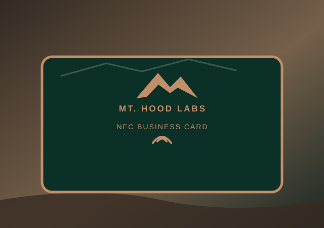

Make a lasting impression.

A professional NFC card that connects people to your business instantly.
Alex Morgan
Creative Consultant · Example Studio
Sample professional profile
Alex Morgan
Operations & Technology Consultant
Example Studio · Portland, Oregon
Professional Summary
Operations and technology consultant with 8 years of experience helping small businesses streamline workflows, improve customer experience, and launch practical digital tools.
Experience
Senior Operations Consultant · Example Studio · 2022–Present
Led digital adoption projects, optimized service workflows and coordinated cross-functional teams.
Project Coordinator · North Coast Creative (fictional) · 2018–2022
Managed client deliverables, scheduling, vendor communication and process improvements.
Education & Skills
B.S. Business Administration · Sample University (fictional)
Project management · CRM · Customer experience · Data reporting · Process automation
All résumé details and this illustrated portrait are fictional demo content.
Connect with Alex
💾 Save contact
Download a sample contact card.
Sample content only. No real orders, payments or contact information collected.